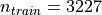
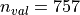
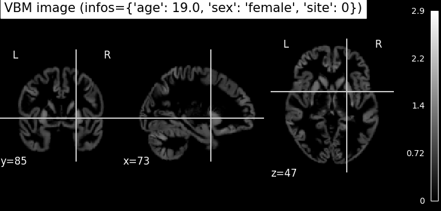
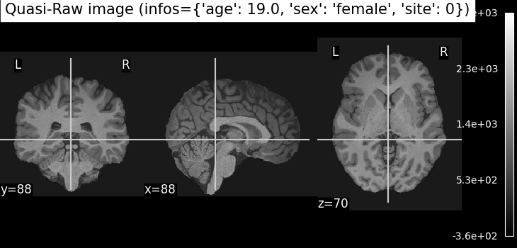

Note
Go to the end to download the full example code.
Presentation of the OpenBHB dataset¶
This notebook introduces the OpenBHB dataset [1], a large-scale, multi-site brain MRI dataset. It is designed to perform benchmarking of machine learning and deep learning models on neuroimaging data.
We will demonstrate how to use OpenBHB for:
We will start by visualizing the available resources in OpenBHB, then we will demonstrate how to perform these prediction tasks.
Load the packages¶
First, we need to load the packages to run this notebook:
Import packages
import matplotlib.pyplot as plt
import nibabel
import numpy as np
import pandas as pd
import seaborn as sns
from nilearn import datasets, plotting
from sklearn.gaussian_process import GaussianProcessRegressor
from sklearn.gaussian_process.kernels import RBF, ConstantKernel, WhiteKernel
from sklearn.linear_model import LogisticRegression, Ridge
from sklearn.metrics import (
accuracy_score,
r2_score,
)
from sklearn.pipeline import make_pipeline
from sklearn.preprocessing import MinMaxScaler, StandardScaler
from nidl.datasets import OpenBHB
Load the OpenBHB dataset and plot the modalities¶
OpenBHB contains 6 modalities (or preprocessed data) of healthy subject anatomical brains. It contains  training images and  validation images. Demographic information about the subjects (age, sex) are available along with the details on the acquisition machines (magnetic field strength, acquisition setting).
Plot whole-brain Voxel-Based Morphometry (VBM) and Quasi-Raw images¶
Let’s take a look at the first subject in the dataset. We’ll visualize two different modalities:
VBM (Voxel-Based Morphometry): gray matter density maps computed using the CAT12 toolbox. VBM preprocessing involves tissue segmentation, normalization to MNI space, and modulation, resulting in voxel-wise maps that reflect local gray matter volume.
Quasi-Raw: T1-weighted MRI scans that have been preprocessed with basic steps like bias correction and skull stripping, but without spatial normalization or heavy smoothing. The goal is to retain as much of the anatomical detail of the original scan as possible, providing input that is close to raw data while still being in the same physical space across subjects.
all_mods, infos = dataset[0] # Get data from first subject
# VBM
img_vbm = all_mods["vbm"][0] # select the first (and only) channel
nii_img = nibabel.Nifti1Image(img_vbm, affine=np.eye(4))
print(img_vbm.shape)
plotting.plot_anat(nii_img, title=f"VBM image (infos={infos})")
# Quasi-Raw
img_quasiraw = all_mods["quasiraw"][0] # select the first (and only) channel
nii_img = nibabel.Nifti1Image(img_quasiraw, affine=np.eye(4))
plotting.plot_anat(nii_img, title=f"Quasi-Raw image (infos={infos})")
- 
- 
(121, 145, 121)
<nilearn.plotting.displays._slicers.OrthoSlicer object at 0x7ffa1adefd10>
Plot VBM-ROI on the Neuromorphometrics atlas¶
In this visualization, we map regional gray matter volumes (VBM-ROI) onto a brain template using the Neuromorphometrics atlas**:
# - The VBM-ROI features are computed by averaging voxel-wise gray matter volumes
# within each of the **142 anatomical regions** defined in the atlas.
# - Each region corresponds to a gray matter structure, and volumes are
# extracted independently for each hemisphere.
# - The resulting brain map shows the **regional gray matter volume in
# milliliters (mL)**.
def map_roi_on_neuromorphometrics_atlas(roi_values, labels, atlas):
# Map ROI values on the Neuromorphometrics atlas
atlas_data = atlas["data"].get_fdata()
atlas_labels = atlas["labels"]
brain_map = np.zeros_like(atlas_data)
idx_mapping = {name: atlas_labels.index(name) for name in labels}
for idx, label in enumerate(labels):
brain_map[atlas_data == idx_mapping[label]] = roi_values[idx]
brain_map = nibabel.Nifti1Image(brain_map, affine=atlas["data"].affine)
return brain_map
# Step 1: Select regional gray matter volumes for the first subject
# first 142 ROI volumes (gray matter only)
vbm_roi = all_mods["vbm_roi"][0][:142]
# Step 2: Clean up ROI labels (remove '_GM_Vol' suffix)
labels = [
label.replace("_GM_Vol", "")
for label in dataset.get_vbm_roi_labels()[:142]
]
# Step 3: Load the Neuromorphometrics atlas used for mapping
atlas = dataset.get_neuromorphometrics_atlas()
# Step 4: Project the ROI values onto the brain volume using the atlas
brain_map = map_roi_on_neuromorphometrics_atlas(vbm_roi, labels, atlas)
# Step 5: Plot the resulting brain map
plotting.plot_stat_map(
brain_map,
title="Regional Gray Matter Volume (mL)",
cmap="plasma", # visually appealing sequential colormap
draw_cross=False,
colorbar=True,
)
<nilearn.plotting.displays._slicers.OrthoSlicer object at 0x7ff92e07b500>
Plot Surface-Based Measures from FreeSurfer¶
The OpenBHB dataset includes surface-based cortical measurements extracted using FreeSurfer, such as:
Cortical thickness
Surface area
Gray matter volume
Curvature
These measures are averaged over predefined regions from:
The Desikan-Killiany atlas (34 cortical regions per hemisphere)
The Destrieux atlas (74 cortical regions per hemisphere, excluding the medial wall)
Each value represents a regional summary of the surface geometry or morphology of the cortex. In addition, OpenBHB provides xhemi (cross-hemisphere) data computed on the fsaverage7 template (163842 vertices), which merges homologous regions across both hemispheres. This allows for analysis that reduces hemispheric asymmetries and improves statistical power by combining left and right hemisphere information.
In the following, we will define a small utility function to map these regional values onto the standard FreeSurfer surface (fsaverage5) for visualization of Desikan and Destrieux-based measures. For the xhemi data, which is computed on the higher-resolution fsaverage7 surface, visualization can be done similarly but requires using the corresponding fsaverage7 mesh files.
Visualize regional measures on the Destrieux atlas¶
We start by visualizing the regional measures based on the Destrieux atlas. The following function maps the regional values onto the fsaverage5 surface for visualization.
def map_freesurfer_destrieux_data(roi_values, labels, hemi="left"):
# Load Destrieux atlas
fsaverage = datasets.fetch_atlas_surf_destrieux(verbose=0)
fs_labels = list(fsaverage["labels"])
map_hemi = fsaverage[f"map_{hemi}"]
# Map ROI values to vertex-wise data using the labels
idx_mapping = {name: fs_labels.index(name) for name in labels}
vertex_data = np.zeros_like(map_hemi, dtype=float)
for idx, roi_name in enumerate(labels):
vertex_data[map_hemi == idx_mapping[roi_name]] = roi_values[idx]
return vertex_data
# Load the correct channel index for the features
surface_area = dataset.get_fs_roi_feature_names().index("surface_area_mm^2")
volume = dataset.get_fs_roi_feature_names().index("gray_matter_volume_mm^3")
thickness = dataset.get_fs_roi_feature_names().index("average_thickness_mm")
curvature = dataset.get_fs_roi_feature_names().index(
"integrated_rectified_mean_curvature_mm^-1"
)
# Load the ROI data
labels = dataset.get_fs_labels(symmetric=True)
fs_surface = all_mods["fs_destrieux_roi"][surface_area]
fs_volume = all_mods["fs_destrieux_roi"][volume]
fs_thickness = all_mods["fs_destrieux_roi"][thickness]
fs_curv = all_mods["fs_destrieux_roi"][curvature]
# Map the ROI on the Destrieux surfacic atlas
surface_vertex = map_freesurfer_destrieux_data(fs_surface, labels)
volume_vertex = map_freesurfer_destrieux_data(fs_volume, labels)
thickness_vertex = map_freesurfer_destrieux_data(fs_thickness, labels)
curv_vertex = map_freesurfer_destrieux_data(fs_curv, labels)
# Prepare plots
data = [surface_vertex, volume_vertex, thickness_vertex, curv_vertex]
titles = [
"Surface area ($mm^2$)",
"GM volume ($mm^3$)",
"Cortical thickness ($mm$)",
"Mean curvature ($mm^{-1}$)",
]
fsaverage = datasets.fetch_surf_fsaverage(mesh="fsaverage5")
inflated_left = fsaverage["infl_left"]
sulc_left = fsaverage["sulc_left"]
fig, axes = plt.subplots(
1, 4, figsize=(12, 3), subplot_kw={"projection": "3d"}
)
# Plot each measurement
for ax, dat, title in zip(axes, data, titles):
plotting.plot_surf(
inflated_left,
surf_map=dat,
hemi="left",
view="lateral",
bg_map=sulc_left,
cmap="plasma",
colorbar=True,
axes=ax,
title=title,
figure=fig,
)
plt.subplots_adjust(wspace=0.25)
plt.show()
/home/runner/work/nidl/nidl/examples/plot_openbhb.py:194: UserWarning:
The following regions are present in the atlas look-up table,
but missing from the atlas image:
index name
0 Unknown
fsaverage = datasets.fetch_atlas_surf_destrieux(verbose=0)
/home/runner/work/nidl/nidl/examples/plot_openbhb.py:194: UserWarning:
The following regions are present in the atlas look-up table,
but missing from the atlas image:
index name
0 Unknown
fsaverage = datasets.fetch_atlas_surf_destrieux(verbose=0)
/home/runner/work/nidl/nidl/examples/plot_openbhb.py:194: UserWarning:
The following regions are present in the atlas look-up table,
but missing from the atlas image:
index name
0 Unknown
fsaverage = datasets.fetch_atlas_surf_destrieux(verbose=0)
/home/runner/work/nidl/nidl/examples/plot_openbhb.py:194: UserWarning:
The following regions are present in the atlas look-up table,
but missing from the atlas image:
index name
0 Unknown
fsaverage = datasets.fetch_atlas_surf_destrieux(verbose=0)
/home/runner/work/nidl/nidl/examples/plot_openbhb.py:194: UserWarning:
The following regions are present in the atlas look-up table,
but missing from the atlas image:
index name
0 Unknown
fsaverage = datasets.fetch_atlas_surf_destrieux(verbose=0)
/home/runner/work/nidl/nidl/examples/plot_openbhb.py:194: UserWarning:
The following regions are present in the atlas look-up table,
but missing from the atlas image:
index name
0 Unknown
fsaverage = datasets.fetch_atlas_surf_destrieux(verbose=0)
/home/runner/work/nidl/nidl/examples/plot_openbhb.py:194: UserWarning:
The following regions are present in the atlas look-up table,
but missing from the atlas image:
index name
0 Unknown
fsaverage = datasets.fetch_atlas_surf_destrieux(verbose=0)
/home/runner/work/nidl/nidl/examples/plot_openbhb.py:194: UserWarning:
The following regions are present in the atlas look-up table,
but missing from the atlas image:
index name
0 Unknown
fsaverage = datasets.fetch_atlas_surf_destrieux(verbose=0)
/home/runner/work/nidl/nidl/examples/plot_openbhb.py:244: DeprecationWarning: The `darkness` parameter will be deprecated in release 0.13. We recommend setting `darkness` to None
plotting.plot_surf(
Visualize fine-grained measures on the fsaverage7 template¶
Next, we visualize more fine-grained FreeSurfer surface features on the left hemisphere using the higher-resolution fsaverage7 template:
lh.curv: Mean curvature map of the cortical surface, reflecting folding patterns (arbitrary unit, negative=sulci, positive=gyri).
lh.sulc: Sulcal depth map, indicating the depth of sulci (cortical folds), in millimiter.
lh.thickness: Cortical thickness values at each vertex (in millimiter).
# Load the correct channels for xhemi
thickness = dataset.get_fs_xhemi_feature_names().index("lh.thickness")
sulc = dataset.get_fs_xhemi_feature_names().index("lh.sulc")
curv = dataset.get_fs_xhemi_feature_names().index("lh.curv")
# Load the xhemi data
fs_thickness = all_mods["fs_xhemi"][thickness]
fs_sulc = all_mods["fs_xhemi"][sulc]
fs_curv = all_mods["fs_xhemi"][curv]
# Get fsaverage7 template
fsaverage = datasets.fetch_surf_fsaverage(mesh="fsaverage7")
infl_left = fsaverage["infl_left"]
sulc_left = fsaverage["sulc_left"]
# Prepare plots
data = [fs_thickness, fs_sulc, fs_curv]
titles = [
"Cortical thickness (in $mm$)",
"Sulcal depth (in $mm$)",
"Curvature",
]
fig, axes = plt.subplots(1, 3, figsize=(9, 4), subplot_kw={"projection": "3d"})
for ax, dat, title in zip(axes, data, titles):
plotting.plot_surf(
infl_left,
surf_map=dat,
hemi="left",
bg_map=sulc_left,
darkness=0.5,
cmap="plasma",
colorbar=True,
axes=ax,
title=title,
figure=fig,
)
[fetch_surf_fsaverage] Dataset created in /home/runner/nilearn_data/fsaverage
[fetch_surf_fsaverage] Downloading data from https://osf.io/svf8k/download ...
[fetch_surf_fsaverage]
Downloaded 704512 of 34242788 bytes (2.1%%, 48.0s remaining)
[fetch_surf_fsaverage]
Downloaded 1703936 of 34242788 bytes (5.0%%, 38.5s remaining)
[fetch_surf_fsaverage]
Downloaded 2703360 of 34242788 bytes (7.9%%, 35.2s remaining)
[fetch_surf_fsaverage]
Downloaded 3686400 of 34242788 bytes (10.8%%, 33.4s remaining)
[fetch_surf_fsaverage]
Downloaded 4702208 of 34242788 bytes (13.7%%, 31.6s remaining)
[fetch_surf_fsaverage]
Downloaded 5718016 of 34242788 bytes (16.7%%, 30.1s remaining)
[fetch_surf_fsaverage]
Downloaded 6750208 of 34242788 bytes (19.7%%, 28.7s remaining)
[fetch_surf_fsaverage]
Downloaded 7667712 of 34242788 bytes (22.4%%, 28.0s remaining)
[fetch_surf_fsaverage]
Downloaded 8732672 of 34242788 bytes (25.5%%, 26.5s remaining)
[fetch_surf_fsaverage]
Downloaded 9781248 of 34242788 bytes (28.6%%, 25.3s remaining)
[fetch_surf_fsaverage]
Downloaded 10797056 of 34242788 bytes (31.5%%, 24.2s remaining)
[fetch_surf_fsaverage]
Downloaded 11845632 of 34242788 bytes (34.6%%, 23.0s remaining)
[fetch_surf_fsaverage]
Downloaded 12746752 of 34242788 bytes (37.2%%, 22.2s remaining)
[fetch_surf_fsaverage]
Downloaded 13778944 of 34242788 bytes (40.2%%, 21.1s remaining)
[fetch_surf_fsaverage]
Downloaded 14843904 of 34242788 bytes (43.3%%, 19.9s remaining)
[fetch_surf_fsaverage]
Downloaded 15925248 of 34242788 bytes (46.5%%, 18.7s remaining)
[fetch_surf_fsaverage]
Downloaded 16941056 of 34242788 bytes (49.5%%, 17.6s remaining)
[fetch_surf_fsaverage]
Downloaded 17973248 of 34242788 bytes (52.5%%, 16.5s remaining)
[fetch_surf_fsaverage]
Downloaded 18939904 of 34242788 bytes (55.3%%, 15.6s remaining)
[fetch_surf_fsaverage]
Downloaded 20021248 of 34242788 bytes (58.5%%, 14.4s remaining)
[fetch_surf_fsaverage]
Downloaded 20938752 of 34242788 bytes (61.1%%, 13.6s remaining)
[fetch_surf_fsaverage]
Downloaded 21970944 of 34242788 bytes (64.2%%, 12.5s remaining)
[fetch_surf_fsaverage]
Downloaded 23003136 of 34242788 bytes (67.2%%, 11.4s remaining)
[fetch_surf_fsaverage]
Downloaded 23887872 of 34242788 bytes (69.8%%, 10.6s remaining)
[fetch_surf_fsaverage]
Downloaded 24920064 of 34242788 bytes (72.8%%, 9.5s remaining)
[fetch_surf_fsaverage]
Downloaded 25985024 of 34242788 bytes (75.9%%, 8.4s remaining)
[fetch_surf_fsaverage]
Downloaded 27049984 of 34242788 bytes (79.0%%, 7.3s remaining)
[fetch_surf_fsaverage]
Downloaded 28065792 of 34242788 bytes (82.0%%, 6.3s remaining)
[fetch_surf_fsaverage]
Downloaded 28999680 of 34242788 bytes (84.7%%, 5.3s remaining)
[fetch_surf_fsaverage]
Downloaded 30064640 of 34242788 bytes (87.8%%, 4.2s remaining)
[fetch_surf_fsaverage]
Downloaded 31096832 of 34242788 bytes (90.8%%, 3.2s remaining)
[fetch_surf_fsaverage]
Downloaded 32161792 of 34242788 bytes (93.9%%, 2.1s remaining)
[fetch_surf_fsaverage]
Downloaded 33193984 of 34242788 bytes (96.9%%, 1.1s remaining)
[fetch_surf_fsaverage] ...done. (37 seconds, 0 min)
[fetch_surf_fsaverage] Extracting data from /home/runner/nilearn_data/fsaverage/735bf0f211246c83396b5f21f706c224/download...
[fetch_surf_fsaverage] .. done.
/home/runner/work/nidl/nidl/examples/plot_openbhb.py:296: DeprecationWarning: The `darkness` parameter will be deprecated in release 0.13. We recommend setting `darkness` to None
plotting.plot_surf(
Fit machine learning models for age and sex prediction¶
Now that we have explored the different modalities in OpenBHB, we will demonstrate how to use them to fit simple machine learning models on two standard benchmarking tasks: age prediction (regression) and sex classification. We will compare three representations of the brain:
the VBM-ROI features, which provides regional gray matter volumes based on the Neuromorphometrics atlas,
the Desikan-based SBM ROI features, which provide surface-based measures in 68 cortical regions,
the Destrieux-based SBM ROI features, which provide surface-based measures in 148 cortical regions.
We start by loading all the relevant datasets for these tasks:
modalities = ["vbm_roi", "fs_desikan_roi", "fs_destrieux_roi"]
modality_names = {
"vbm_roi": "VBM-Neuromorphometrics",
"fs_desikan_roi": "SBM-Desikan",
"fs_destrieux_roi": "SBM-Destrieux",
}
dataset_train = OpenBHB(
"/tmp/openBHB",
modality=modalities,
target=["age", "sex"],
split="train",
streaming=True,
)
dataset_val = OpenBHB(
"/tmp/openBHB",
modality=modalities,
target=["age", "sex"],
split="val",
streaming=True,
)
def extract_features_and_targets(dataset, modalities=modalities):
"""Extract features and target arrays from OpenBHB dataset."""
X, y_age, y_sex = {m: [] for m in modalities}, [], []
for x, y in dataset:
for m in modalities:
X[m].append(x[m].flatten())
y_age.append(y["age"])
y_sex.append(y["sex"])
return (
{m: np.array(x) for m, x in X.items()},
np.array(y_age),
np.array(y_sex),
)
X_train, y_train_age, y_train_sex = extract_features_and_targets(dataset_train)
X_test, y_test_age, y_test_sex = extract_features_and_targets(dataset_val)
print("Age range:", y_train_age.min(), "-", y_train_age.max())
print("Sex distribution:\n", pd.Series(y_train_sex).value_counts())
Age range: 6.0 - 86.19849418206707
Sex distribution:
male 1669
female 1558
Name: count, dtype: int64
Age prediction with Ridge regression¶
We will use a Ridge regression model with standard scaling as a baseline for age prediction. We will evaluate the model using the R² score and visualize the predicted vs. true ages for the three modalities.
colors = {
"vbm_roi": "tab:blue",
"fs_desikan_roi": "tab:green",
"fs_destrieux_roi": "tab:orange",
}
fig, axes = plt.subplots(1, 3, figsize=(15, 5), sharex=True, sharey=True)
for ax, modality in zip(axes, modalities):
ridge_model = make_pipeline(StandardScaler(), Ridge(alpha=1.0))
ridge_model.fit(X_train[modality], y_train_age)
y_pred_age = ridge_model.predict(X_test[modality])
score = r2_score(y_test_age, y_pred_age)
sns.scatterplot(
x=y_test_age,
y=y_pred_age,
alpha=0.5,
edgecolor=None,
color=colors[modality],
ax=ax,
)
# Add reference line y=x
sns.lineplot(
x=y_test_age,
y=y_test_age,
color="red",
linestyle="--",
ax=ax,
)
ax.set_title(f"{modality_names[modality]}\nR²={score:.2f}")
ax.set_xlabel("True Age")
ax.set_ylabel("Predicted Age")
ax.grid(True)
plt.suptitle("Age Prediction with Ridge Regression", fontsize=14, y=1.02)
plt.tight_layout()
plt.show()
Sex classification with logistic regression¶
Next, we will use a logistic regression model with standard scaling as a baseline for sex classification. We will evaluate the model using accuracy.
accuracies = []
for modality in modalities:
logreg_model = make_pipeline(
StandardScaler(), LogisticRegression(max_iter=1000)
)
logreg_model.fit(X_train[modality], y_train_sex)
y_pred_sex = logreg_model.predict(X_test[modality])
acc = accuracy_score(y_test_sex, y_pred_sex)
accuracies.append(acc)
plt.figure(figsize=(6, 4))
sns.barplot(
x=[modality_names[m] for m in modalities],
y=accuracies,
palette=colors.values(),
)
plt.xlabel("Modality")
plt.ylabel("Accuracy")
plt.ylim(0, 1.0)
plt.title("Sex Classification with Logistic Regression")
# Add accuracy text above bars
for i, acc in enumerate(accuracies):
plt.text(i, acc + 0.02, f"{acc:.2f}", ha="center", fontsize=10)
plt.tight_layout()
plt.show()

/home/runner/work/nidl/nidl/examples/plot_openbhb.py:440: FutureWarning:
Passing `palette` without assigning `hue` is deprecated and will be removed in v0.14.0. Assign the `x` variable to `hue` and set `legend=False` for the same effect.
sns.barplot(
Observations: the VBM representation gives the best results for both tasks, indicating that regional gray matter volumes are highly informative for predicting age and sex. Nevertheless, it would be interesting to check whether combining the modalities would improve the result, which would mean that they provide complementary information. This is left as an exercise to the reader.
Modeling brain aging trajectories¶
Since brain morphometric features have been computed for all subjects in OpenBHB, we can study the brain atrophy patterns across subjects age [2]. Specifically, we will use gray matter volumes computed on the Neuromorphometrics atlas for each subject to regress a Gaussian Process Regression (GPR) against age. This way, we will estimate the mean and standard variation of the GM volume trajectories.
We start by formatting correctly the previous data before fitting the GPR.
df = pd.DataFrame(
np.concatenate((X_train["vbm_roi"], X_test["vbm_roi"])),
columns=dataset_train.get_vbm_roi_labels(),
)
age = np.concatenate((y_train_age, y_test_age))
sex = np.concatenate((y_train_sex, y_test_sex))
tiv = np.array(dataset_train.get_participants()["tiv"])
# Mapping region codes to clean names
region_map = {
"Hip": "Hippocampus",
"Amy": "Amygdala",
"LatVen": "Lateral Ventricles",
"Cau": "Caudate",
"Put": "Putamen",
"Pal": "Pallidum",
"ThaPro": "Thalamus",
"Acc": "Nucleus Accumbens",
"FusGy": "Fusiform Gyrus",
"MidFroGy": "Middle Frontal Gyrus",
"PoCGy": "Postcentral Gyrus",
"PrcGy": "Precentral Gyrus",
}
regions = list(region_map.values())
# Average left/right regions + normalize by TIV
def average_hemispheres_and_tiv_normalized(df):
avg_data = {}
for region, region_name in region_map.items():
l_col = f"l{region}_GM_Vol"
r_col = f"r{region}_GM_Vol"
if l_col in df.columns and r_col in df.columns:
avg_data[region_name] = (df[l_col] + df[r_col]) / 2
avg_data[region_name] = avg_data[region_name] / tiv
return pd.DataFrame(avg_data)
df = average_hemispheres_and_tiv_normalized(df)
df["age"] = age
df["sex"] = sex
We can now fit the GPR model to obtain brain aging trajectories of gray matter volumes:
gpr_results = {}
for sex in ["male", "female"]:
df_sex = df[df["sex"] == sex]
X = df_sex["age"].values.reshape(-1, 1)
X_orig = np.copy(X)
y = df_sex[regions].values
X = MinMaxScaler().fit_transform(X)
# Define kernel: Constant * RBF
kernel = ConstantKernel(1.0, (0.1, 10.0)) * RBF() + WhiteKernel(
noise_level=0.05, noise_level_bounds=(1e-4, 1.0)
)
# Fit Gaussian Process
gpr = GaussianProcessRegressor(
kernel=kernel,
alpha=1e-7,
normalize_y=True,
random_state=42,
)
gpr.fit(X, y)
# Predictions with uncertainty
X_grid = np.linspace(X.min(), X.max(), 200).reshape(-1, 1)
y_mean, y_std = gpr.predict(X_grid, return_std=True)
X_grid = np.linspace(X_orig.min(), X_orig.max(), 200).reshape(-1, 1)
gpr_results[sex] = (X_grid, y_mean, y_std)
Finally, we plot the brain trajectories per brain region:
sns.set_theme(style="whitegrid")
sex_palette = {
"male": "skyblue",
"female": "salmon",
}
n_cols = 3
n_rows = int(np.ceil(len(regions) / n_cols))
fig, axes = plt.subplots(
n_rows, n_cols, figsize=(18, n_rows * 3.5), sharex=True
)
axes = axes.flatten()
for i, region in enumerate(regions):
ax = axes[i]
sns.scatterplot(
data=df,
x="age",
y=region,
hue="sex",
palette=sex_palette,
ax=ax,
alpha=0.7,
s=40,
)
ax.legend(title="Sex")
for sex in ["male", "female"]:
# Plot
X_grid, y_mean, y_std = gpr_results[sex]
y_mean, y_std = y_mean[:, i], y_std[:, i]
ax.plot(X_grid, y_mean, color=sex_palette[sex], lw=2)
ax.fill_between(
X_grid.ravel(),
y_mean - 1.96 * y_std,
y_mean + 1.96 * y_std,
color="blue",
alpha=0.1,
)
ax.legend()
ax.set_title(region, fontsize=13)
ax.set_xlabel("Age")
ax.set_ylabel("GM volume (TIV-normalized)")
plt.tight_layout(rect=[0, 0, 0.9, 1])
plt.show()
Observations: We retrieve some results from the literature [2], [3] in particular regarding the earlier atrophy of the thalamus compared to hippocampus and amygdala (relatively preserved until 50-60 years old) and global atrophy early-on of pre-central and post-central gryus.
References¶
Total running time of the script: (3 minutes 12.129 seconds)
Estimated memory usage: 2629 MB